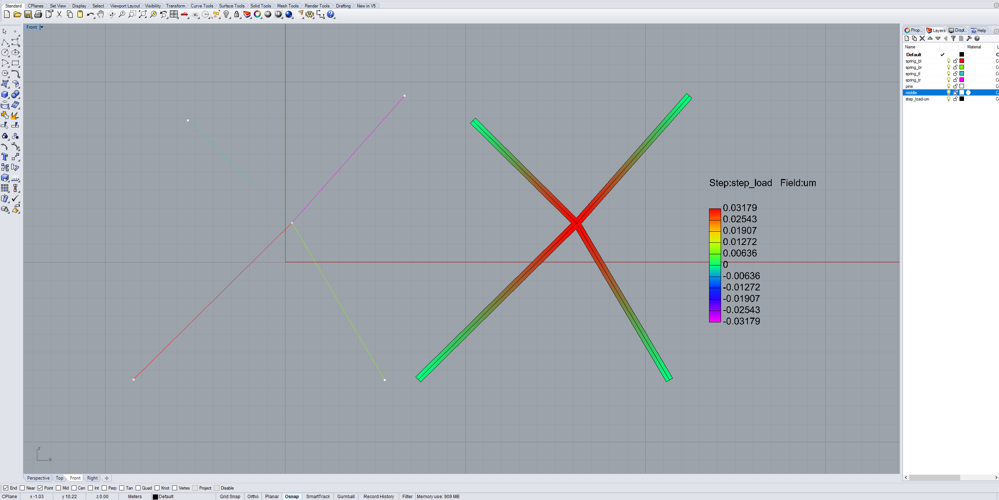

spring_simple
This example works for: Abaqus.

import compas_fea
from compas_fea.cad import rhino
from compas_fea.structure import Structure
from compas_fea.structure import ElementProperties as Properties
from compas_fea.structure import SpringSection
from compas_fea.structure import PinnedDisplacement
from compas_fea.structure import RollerDisplacementXZ
from compas_fea.structure import PointLoad
from compas_fea.structure import GeneralStep
__author__ = ['Andrew Liew <liew@arch.ethz.ch>']
__copyright__ = 'Copyright 2018, BLOCK Research Group - ETH Zurich'
__license__ = 'MIT License'
__email__ = 'liew@arch.ethz.ch'
# Structure
mdl = Structure(name='spring_simple', path='C:/Temp/')
# Elements
springs = ['spring_bot_left', 'spring_bot_right', 'spring_top_left', 'spring_top_right']
rhino.add_nodes_elements_from_layers(mdl, line_type='SpringElement', layers=springs)
# Sets
rhino.add_sets_from_layers(mdl, layers=['pins', 'middle'])
# Sections
mdl.add_section(SpringSection(name='spring_elastic', stiffness={'axial': 10000}))
mdl.add_section(SpringSection(name='spring_soft', stiffness={'axial': 1000}))
# Properties
mdl.add_element_properties([
Properties(name='ep_bl', section='spring_elastic', elsets='spring_bot_left'),
Properties(name='ep_br', section='spring_soft', elsets='spring_bot_right'),
Properties(name='ep_tl', section='spring_elastic', elsets='spring_top_left'),
Properties(name='ep_tr', section='spring_elastic', elsets='spring_top_right')])
# Displacements
mdl.add_displacements([
PinnedDisplacement(name='disp_pins', nodes='pins'),
RollerDisplacementXZ(name='disp_roller', nodes='middle')])
# Loads
mdl.add_load(PointLoad(name='load_middle', nodes='middle', z=-500))
# Steps
mdl.add_steps([
GeneralStep(name='step_bc', displacements=['disp_pins', 'disp_roller']),
GeneralStep(name='step_load', loads=['load_middle'])])
mdl.steps_order = ['step_bc', 'step_load']
# Summary`
mdl.summary()
# Run (Sofistik)
mdl.write_input_file(software='abaqus')
# Run (Abaqus/OpenSees)
mdl.analyse_and_extract(software='abaqus', fields=['u', 'spf'], license='research')
#mdl.analyse_and_extract(software='opensees', fields=['u', 'spf'])
rhino.plot_data(mdl, step='step_load', field='um', radius=0.02)
rhino.plot_data(mdl, step='step_load', field='spfx', radius=0.02)